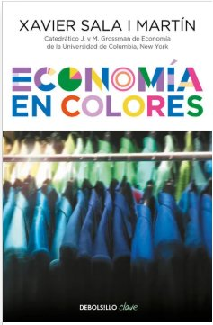

Repensar la pobreza
Abhijit V. Banerjee y Esther Duflo
Pobreza y desarrolloUNIVERSIDAD TÉCNICA DE COTOPAXI
Un espacio para hacer preguntas, contrastar ideas y comprender nuestra realidad. Un libro nos reúne; el diálogo nos lleva más lejos.
Introducción a la
ciencia económica
SOBRE LA MESA
La lectura propuesta nos invita a pensar cómo funcionan nuestras sociedades y qué mecanismos abren o cierran oportunidades.
Abordaremos empleo, educación, exclusión y políticas públicas desde una pregunta compartida: ¿qué nos ayuda a comprender de Ecuador y de la región?
Introducción a la ciencia económica
Trabajamos con una propuesta teórica que puede discutirse y contrastarse. Los datos de la edición se complementarán con evidencia reciente.
Consultar capítulos y preguntasPASO A PASO
Abre un capítulo, lleva una pregunta y marca tu avance. Las fechas se acordarán entre los clubes.
Tu avance se guarda solo en este navegador. No es un registro de asistencia.
Páginas de la numeración impresa de la edición de 2008. El apéndice «Ciencia económica y ciencias naturales» es una lectura complementaria. Abrir guía imprimible.
COOPERACIÓN INTERUNIVERSITARIA
Preparamos actividades conjuntas con estudiantes de Economía de otras universidades. Cada colaboración se acuerda mediante una ficha operativa.
El taller «Capítulo a Capítulo» recorre la obra entera: un sorteo reparte los capítulos impares a una universidad y los pares a la otra, y se expone del primero al último alternando instituciones. Cierra con una retroalimentación conjunta.
Ver el proceso completo del taller
La actividad se coordina entre las comunidades académicas. No se anuncia un convenio institucional formal ni movilidad financiada.
NUESTRA MEMORIA LECTORA
Abhijit V. Banerjee y Esther Duflo
Pobreza y desarrollo
LECTURA REALIZADAXavier Sala i Martín
Economía y vida cotidianaAdolfo Figueroa
Desigualdad y exclusiónNo hay lecturas que coincidan con tu búsqueda.
Las portadas de las lecturas realizadas se reproducen en tamaño reducido para identificar cada obra; sus derechos pertenecen a sus editoriales. La lectura propuesta se representa con una composición tipográfica propia.
UNA COMUNIDAD CON ACUERDOS
Pluralismo, participación voluntaria y argumentos con evidencia. Los acuerdos nos ayudan a cuidar la conversación y sostener el trabajo entre universidades.
DOCUMENTOS PROPUESTOS · VERSIÓN 1.0Identidad, integrantes, derechos, organización, elecciones y cooperación.
Sesiones, participación, selección de expositores y encuentros interuniversitarios.
Idea central, evidencia y pregunta crítica para preparar cada sesión.
Lo que debe acordarse con otra universidad antes de confirmar una actividad conjunta.
Formulario para quienes desean pertenecer al club. Se llena en pantalla y se imprime.
Cómo se desarrolla el taller de lectura: sorteo de capítulos, orden de exposición y programa del evento.
Borradores para revisión y aprobación del club y de la instancia institucional que corresponda. No constituyen normativa vigente.
TU PREGUNTA TAMBIÉN CUENTA
La participación es voluntaria. Puedes sumarte a la lectura, proponer una sesión o colaborar en el encuentro con otras universidades.
La convocatoria y el canal de inscripción se publicarán cuando la coordinación confirme el calendario.
Mientras tanto puedes preparar tu solicitud de ingreso: se llena en el navegador, no se envía por internet y se entrega impresa o en PDF.
No se requieren matemáticas avanzadas para la lectura propuesta. La discusión contará con orientación; los conceptos más complejos se trabajarán en conjunto.
Sí, mediante las convocatorias y actividades interuniversitarias que acuerde la coordinación. Cada colaboración se define en una ficha operativa.
No. Cada encuentro tendrá una modalidad virtual. Las visitas serán opcionales y dependerán de los acuerdos y recursos disponibles.
Consulta bibliotecas y canales autorizados de la editorial. El club coordinará el acceso legítimo a la obra; esta web no distribuye el PDF completo.
Su emisión no está confirmada. Cualquier constancia institucional dependerá de la autorización correspondiente y de los criterios comunicados en la convocatoria.